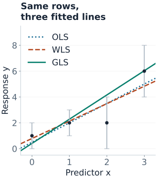
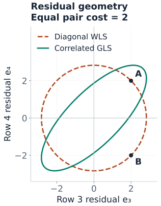

Weighted and Generalized Least Squares
A measurement with large noise should not carry the same precision as one with small noise. Two measurements that share an error source also do not provide the same information as two independent measurements. Weighted and generalized least squares put those distinctions into a linear regression.
- Ordinary least squares (OLS) minimizes the sum of squared residuals.
- Weighted least squares (WLS) scales residuals using row-specific error variances.
- Generalized least squares (GLS) also accounts for error covariance between rows.
All three start with a mean model $y=X\beta+\varepsilon$. Here $X$ includes an intercept column, has full column rank, and
$$E[\varepsilon\mid X]=0,\qquad \operatorname{Cov}(\varepsilon\mid X)=\Sigma.$$The first condition says the modeled mean is correct. The second describes the errors' spread and dependence. Unequal diagonal entries are heteroskedasticity; nonzero off-diagonal entries are correlations between errors. These are properties of errors conditional on the predictors, not simply correlations among the observed responses.
Four Rows, Three Actual Fits
Fit a line $\beta_0+\beta_1x$ to these four observations. Treat the error standard deviations as known external calibration information, not estimates from these four outcomes.
| Row | $x$ | Observed $y$ | Error SD $\sigma_i$ | Precision $1/\sigma_i^2$ |
|---|---|---|---|---|
| 1 | 0 | 1 | 1 | 1 |
| 2 | 1 | 2 | 1 | 1 |
| 3 | 2 | 2 | 2 | $1/4$ |
| 4 | 3 | 6 | 2 | $1/4$ |
First consider a diagonal covariance $D=\operatorname{diag}(1,1,4,4)$. Then consider a full covariance with the same variances but a shared error source in rows 3 and 4:
$$\Sigma=\begin{pmatrix}1&0&0&0\\0&1&0&0\\0&0&4&3\\0&0&3&4\end{pmatrix}.$$Their error correlation is $3/(2\cdot2)=0.75$. The matrix is positive definite. For the comparison below, OLS ignores its structure, WLS uses only its diagonal $D$, and GLS uses all of $\Sigma$.

WLS: Divide Squared Residuals by Variance
For uncorrelated errors with variances $\sigma_i^2$, WLS minimizes
$$Q_D(\beta)=\sum_i\frac{(y_i-x_i^\top\beta)^2}{\sigma_i^2}=(y-X\beta)^\top W(y-X\beta),\qquad W=D^{-1}.$$A row with twice the error SD has four times the variance and one quarter of the precision weight. Weights are inverse variances; the row transformation uses inverse standard deviations. This convention is also used by statsmodels WLS.
$$\hat\beta_{\mathrm{WLS}}=(X^\top W X)^{-1}X^\top W y.$$For our data,
$$X^\top WX=\begin{pmatrix}2.5&2.25\\2.25&4.25\end{pmatrix},\qquad X^\top Wy=\begin{pmatrix}5\\7.5\end{pmatrix}.$$Solving gives $\hat\beta_0=70/89\approx0.7865$ and $\hat\beta_1=120/89\approx1.3483$. OLS instead gives intercept $0.5$ and slope $1.5$. The weighted fit lets the noisier final rows pull the line less strongly, subject to the geometry of the whole design.
Multiplying all precision weights by the same positive constant leaves the fitted coefficients unchanged. It does not turn relative precision information into a known absolute noise scale.
Precision, frequency, and sampling weights have different meanings. Frequency weights encode repeated rows; sampling weights describe representation in a target population. Neither should automatically be treated as inverse measurement variance. See the NIST weighted least-squares criterion for the fixed-weight optimization problem.
GLS: A Joint Error Pattern Has a Joint Cost
GLS uses the complete positive-definite covariance matrix:
$$Q_\Sigma(\beta)=(y-X\beta)^\top\Sigma^{-1}(y-X\beta),$$ $$\hat\beta_{\mathrm{GLS}}=(X^\top\Sigma^{-1}X)^{-1}X^\top\Sigma^{-1}y.$$The inverse covariance generally has off-diagonal terms, so GLS cannot be reduced to a separate positive weight for each row. The GLS documentation distinguishes its covariance input from the inverse-variance weights accepted by WLS.
For the final two residuals $e_3,e_4$ in our example, their contribution is
$$Q_{34}=\frac{(e_3+e_4)^2}{14}+\frac{(e_3-e_4)^2}{2}.$$Because the errors tend to move together, a shared shift is less surprising than a disagreement. The error variance of their difference is $4+4-2(3)=2$, compared with $8$ if the errors were uncorrelated. The observed difference $y_4-y_3=4$ therefore carries more precision about the slope under this covariance model.

Solving the full four-row problem gives $\hat\beta_{\mathrm{GLS}}=(13/32,15/8)^\top=(0.40625,1.875)^\top$. Its steeper slope reflects the more precise contrast between rows 3 and 4. Accounting for correlation is more subtle than simply downweighting an entire correlated group.
| Fit | Unweighted SSE | Diagonal cost $Q_D$ | Full cost $Q_\Sigma$ |
|---|---|---|---|
| OLS | 3.5000 | 1.0625 | 3.3929 |
| WLS | 3.6290 | 0.9551 | 3.5865 |
| GLS | 5.0820 | 1.5942 | 3.0313 |
Each fit minimizes its own column. Compare entries within a column; the three objectives use different metrics. GLS does not promise the smallest unweighted training error.
Whitening: Transform Both the Response and the Design
A stable implementation does not explicitly form $\Sigma^{-1}$. Factor $\Sigma=LL^\top$ by Cholesky decomposition and solve triangular systems:
$$\widetilde y=L^{-1}y,\qquad \widetilde X=L^{-1}X,\qquad \operatorname{Cov}(L^{-1}\varepsilon\mid X)=I.$$Then solve ordinary least squares on $(\widetilde X,\widetilde y)$ using QR or SVD. Transform every design column, including the intercept; the transformed intercept need not remain a column of ones. For diagonal $D$, this reduces to multiplying row $i$ of both $X$ and $y$ by $1/\sigma_i=\sqrt{w_i}$.
Reproduce all three fits with NumPy
import numpy as np
x = np.arange(4.0)
X = np.column_stack([np.ones(4), x])
y = np.array([1., 2., 2., 6.])
D = np.diag([1., 1., 4., 4.])
Sigma = D.copy()
Sigma[2, 3] = Sigma[3, 2] = 3.
def fit(covariance):
L = np.linalg.cholesky(covariance)
X_white = np.linalg.solve(L, X)
y_white = np.linalg.solve(L, y)
return np.linalg.lstsq(X_white, y_white, rcond=None)[0]
for name, covariance in [("OLS", np.eye(4)), ("WLS", D), ("GLS", Sigma)]:
beta = fit(covariance)
residual = y - X @ beta
costs = [residual @ np.linalg.solve(C, residual)
for C in [np.eye(4), D, Sigma]]
print(name, beta, "costs:", costs, "mean at 1.5:", np.array([1, 1.5]) @ beta)The figure generator checks these results against exact coefficient fractions, weighted normal equations, independent numerical optimization, and the whitening covariance identity before drawing the figures.
Mean Predictions and Their Uncertainty
For a new predictor value $x_*=1.5$, plug the original row $v=(1,1.5)^\top$ into $v^\top\hat\beta$. The predicted means are 2.7500 for OLS, 2.8090 for WLS, and 3.21875 for GLS. No new outcome was supplied, so these are prediction comparisons, not held-out accuracy scores.
With full-rank $X$ and known, correct $\Sigma$, GLS minimizes sampling variance among estimators that are linear in $y$ and unbiased. Its coefficient covariance is
$$\operatorname{Cov}(\hat\beta_{\mathrm{GLS}}\mid X)=(X^\top\Sigma^{-1}X)^{-1}.$$The sampling variance of the estimated mean at $x_*=1.5$ is $v^\top\operatorname{Cov}(\hat\beta)v=23/32=0.71875$ for GLS. For OLS, use $A\Sigma A^\top$ with $A=(X^\top X)^{-1}X^\top$ to calculate coefficient covariance under the same true $\Sigma$; its mean-estimate variance here is 1. This compares repeated-sample precision under the specified model; it does not reveal which fitted line is closest to an unknown truth in this particular sample.
A future observation has its own noise as well. If its error is independent of the training errors and has known variance 4, the GLS prediction-error variance is $4+0.71875=4.71875$. If the new error is correlated with training errors, the simple addition is insufficient: cross-covariance and the intended conditional prediction must be modeled.
When $\Sigma=\sigma^2\Omega$ is known only up to a common scale, fitting with $\Omega$ gives the same coefficients, but coefficient covariance is $\sigma^2(X^\top\Omega^{-1}X)^{-1}$. Estimate the scale from the whitened residual sum of squares divided by $n-p$, where $p$ includes the intercept. Normality is not required for the linear unbiased efficiency result; exact Gaussian intervals require the corresponding distributional assumptions.
Estimated Covariance Is Another Fitted Model
In practice, variances and correlations usually need estimation. Feasible GLS fits an initial mean model, uses training residuals to estimate a structured covariance model, then refits with $\hat\Sigma$. Examples include a variance curve, a common within-group correlation, or an autoregressive error model. The statsmodels GLS example illustrates estimating serial correlation from initial residuals.
One residual per row does not reliably identify that row's variance, and a single response vector cannot support an unrestricted covariance matrix without strong structure or replication. In particular, avoid assigning $1/e_i^2$ as if each observed residual were a known variance: near-zero residuals create enormous weights. NIST discusses the uncertainty introduced by estimated weights.
Fixed positive weights can preserve unbiased coefficients under the mean model even when they are inefficient. Weights estimated from the same outcome noise need additional justification; the exact known-covariance guarantee does not automatically transfer. Plug-in standard errors can also miss covariance-parameter uncertainty, especially in small samples.
- Split according to deployment. Keep subjects or clusters together when predicting new groups; preserve chronology when forecasting.
- Fit the full procedure within training folds. This includes the initial mean fit, residual-based variance/correlation estimation, preprocessing, and the final WLS/GLS fit.
- Select covariance structure using validation data appropriately. Do not estimate weights from final-test outcomes or use future residuals to construct a forecasting model.
- Report the target metric. Unweighted error measures typical row performance; precision-weighted error measures a different target. Choose the metric deliberately and reserve a final test set.
External calibration supplied before model fitting can be fixed information, as in this example. If uncertainty in that calibration matters, propagate it rather than silently treating the supplied matrix as exact.
Diagnostics and Robust Alternatives
Inspect residual spread versus fitted values, residual dependence across time or groups, leverage, and sensitivity to extreme weights. After whitening, check whether the remaining pattern is compatible with the proposed covariance structure. Fitted residuals have projection constraints, so they are not literally independent unit-variance errors even when the underlying whitening model is correct.
Sandwich covariance estimates offer an alternative when the mean model is credible but the covariance model is uncertain. Applied to OLS, they change standard errors without changing coefficients. Heteroskedasticity-consistent estimates address unequal variances; cluster-robust estimates address within-cluster dependence under appropriate independent-cluster asymptotics; HAC methods address specified forms of serial dependence. These are not interchangeable, and none makes four observations sufficient for reliable robust inference. The robust covariance documentation distinguishes the options.
For derivations and practical checks, see Gauss–Markov and inference and regression diagnostics.
Quick Checks
| Question | Answer |
|---|---|
| What is the weight when error SD doubles? | One quarter of the original precision weight. The whitening multiplier halves. |
| When is WLS sufficient? | When the covariance is diagonal and the relative variances are correctly specified; uncorrelated errors suffice for the covariance argument. |
| Why does positive correlation change our slope? | The last two errors' difference is more precise, so their observed contrast carries more information. |
| Must GLS reduce ordinary training SSE? | No. It minimizes a different, covariance-adjusted criterion. |
| Does whitening make the model nonlinear? | No. It is a linear transformation of the response and every design column. |